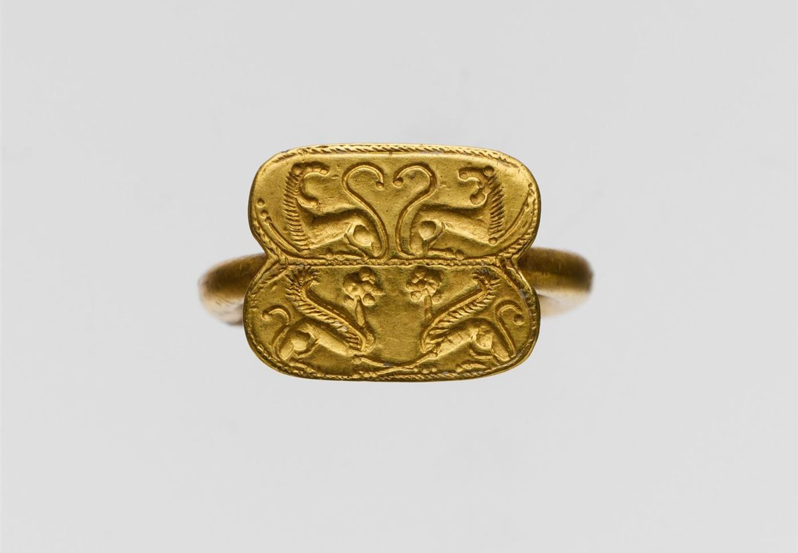

カフェ / 長崎県大村市
六つの×印Sei Tesoro
Cafe
長崎県大村市にあるカフェ「Sei Tesoro Cafe」のご案内ページです。営業時間やメニューなど詳しいことは準備中です。まずはInstagramをのぞいてみてください。

制作側の連想
「Sei」と「Tesoro」を、宝の地図に見立てて
店名の由来や意味は分かりません。制作側には、「Sei」がイタリア語の「6」、「Tesoro」が「宝」に響いて聞こえました(お店の意図とは関係のない聞こえ方です)。そこでこのサイトは、六つの×印をたどる宝の地図の作りにしています。これは制作側の連想で、お店の理念・由来とは無関係です。
地図
点線をたどって、六つの×へ。
下の図は連想によるイメージ図で、実際の地図ではありません。写真は大村市やお店のものではなく、国外・撮影地不明のフリー素材です。
- 1
国外のイメージ(トルコ) 浜でひろう巻き貝ひとつ
- 2

撮影地不明のイメージ 積もる貝殻のかさなり
- 3

国外のイメージ(スウェーデン) 連なる真珠のつや
- 4

国外のイメージ(美術館所蔵品の撮影) 受けつぐ古い金の指輪
- 5

撮影地不明のイメージ 詰める焙煎豆の瓶
- 6

国外のイメージ(米国の美術館所蔵品) 注ぐ金縁のカップ
ご案内
お店のこと(確認できたものだけ)
| 所在地 | 〒856-0807 長崎県大村市宮小路3丁目1998 |
|---|---|
| 電話 | なし |
| 営業時間 | 準備中 |
| 定休日 | 準備中 |
| ご予約 | 準備中 |
| 駐車場 | 準備中 |
| SNS | Instagram @seitesorocafe |